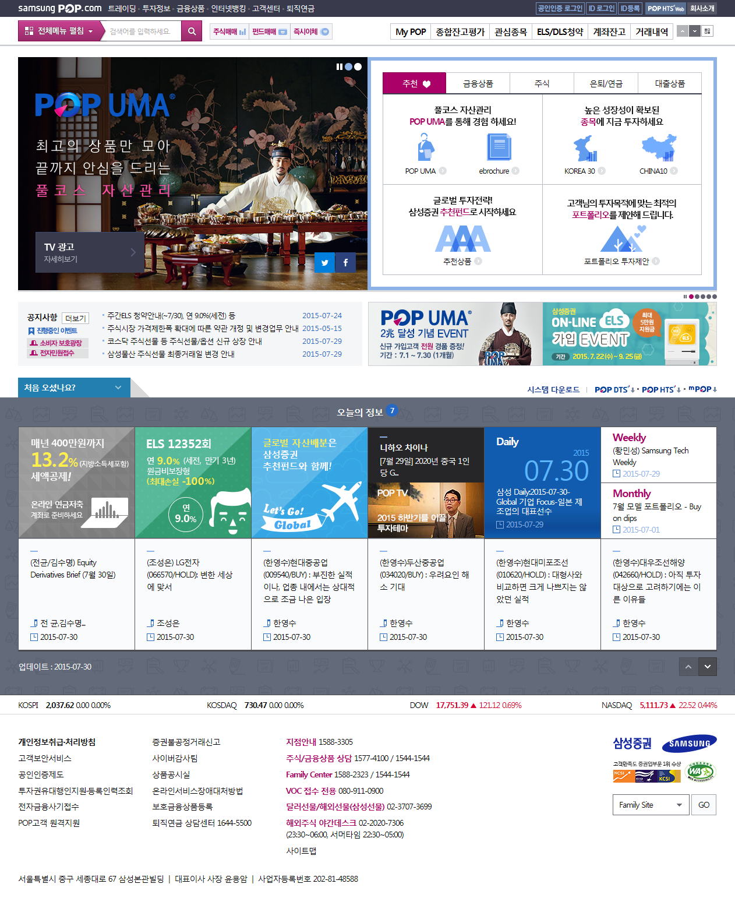
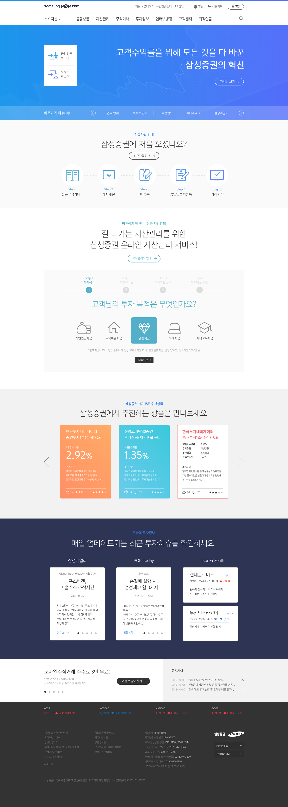
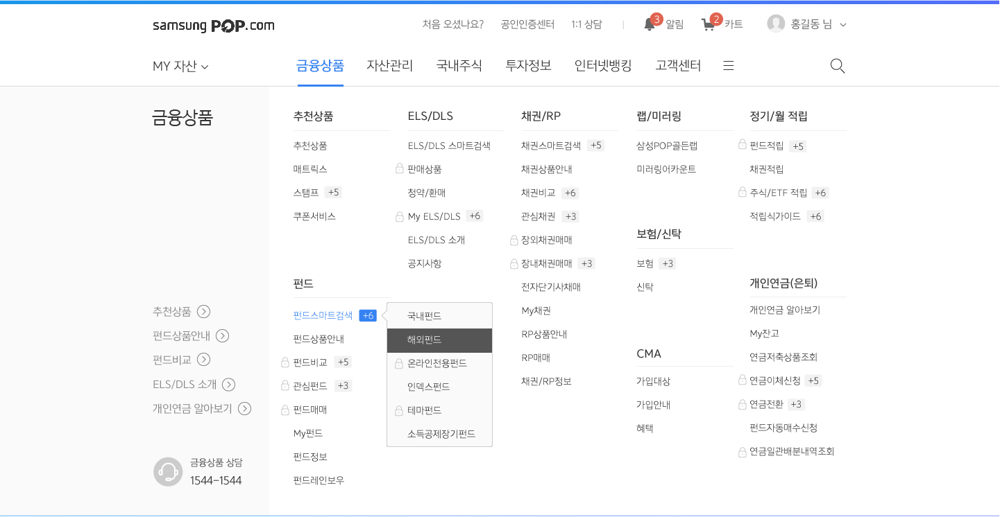

AMY LEE

Date
Jul 2015 - Jun 2016
(1 year)
Industry
Fintech Industry
Client
Samsung Securities Co., Ltd.
(PMO: PwC)
Team
About 50 people (including PMO, design agency, development agency)
Samsung Securities UX consulting &
Online Channels Development
Overview
Samsung Securities is the Korea's leading comprehensive financial investment company providing various financial services ranging from securities brokerage and asset management, corporate finance and fund management through the website, mobile
app and HTS.
The company tried to have a new modern brand identity and give the customers seamless user experience through the 3 online channels (Web, Mobile, HTS).
Goal & Requirements
- Create the user-friendly intefaces for the 3 channels
- Attract new customers and find a easy way to have them sign-up
- Show the same brand look and feel through the 3 channels
- Make the customers understand their services and products easily
Achievements
- There was no complaining VoC (Voice of Customer).
- Some internet news praised Samsung Securities' new user-friendly website.
My Roles
- Researched the latest fintech technology, UX/UI trends and consumer behavior
- Benchmarked the competitors from larger companies to startups (Charles Schwab, Merrill Edge, Fidelity, Vanguard, Betterment, Wealthfront, etc)
- Analyzed every touchpoint of customer experience journey and As-Is pain points
- Conducted FGDs in 4 different groups based on the customer segmentation
- Created over 300 wireframes for the website mainpage, signup page, product detail page, etc., by following the UX principles and UI guidelines
Problems & Solutions
- Inconsistent design between the website, mobile app and HTS
At the very beginning of the project, we had frequent meetings with the mobile and HTS teams to have the same understading of brand identity and brand look and feel.
- Difficult understanding of the trading system and all the products
I opened the real account at Samsung Securities and invested money for the hands-on experience.
- Analyzed over 6,000 pages and 7 different navigation systems for the website
The team members and I built the optimal IA (Information Architect) and 1 navigation system.
- Limitations on applying the latest Fintech technologies and UX/UI design trends due to the web security standard issues
I found out all the regulations and policies for the web security and shared the information with other UX/UI designers.
- Hard to communicate with the client, PMO, design agency and development agency
I took minutes for the meetings and shared them with the team right after the meetings to make sure we're all on the same page.
Work Process
Step 1: Desk Research
- Interview the stakeholders
- Analyze the internal documents
- Research the latest Fintech technologies
- Benchmark the competitiors
- AS-IS Heuristic Evaluations
Step 2: User Research
- Analyze the accumulated user data
- Conduct 4 FGDs
- Analyze MOT (Moment Of Truth) on the user journey
Step 3: Strategy
- Create the optimal user decision-making journey
- Create UX principles and guidelines
Step 4: Design
- Create the design guidelines
- Create prototypes and wireframes
- Have feedbacks from the client and developers
Step 5: Development
- Share all the documents through the internal sharing system
- Conduct page tests before lunching the website
Result
[AS-IS : Main Page]
[TO-BE : Main Page]
[AS-IS : Navigation]

[TO-BE : Navigation]
[AS-IS : My Account]

[TO-BE : My Account]

[TO-BE : Product Shopping Cart]
[TO-BE : Trend Infographic]
+ Moments